Giới thiệu nhanh cách vận hành portal điểm danh & quản lý cuộc họp dành cho khách hàng tiềm năng.
Tám phần chính, đi theo đúng thứ tự một đơn vị bắt đầu sử dụng.
Đăng nhập an toàn, nắm nhanh 6 phân hệ
Số liệu, xu hướng và việc cần xử lý trong ngày
Theo dõi giờ vào/ra, xử lý quên check-out
Lên lịch, điểm danh đại biểu, báo cáo kết quả
Hồ sơ cán bộ, thẻ RFID/NFC, cơ cấu tổ chức
3 bước nạp khuôn mặt và theo dõi lịch sử
Khung giờ, quy tắc điểm danh, trạng thái camera
3 bước triển khai và kênh hỗ trợ
Mỗi đơn vị có tài khoản riêng, dữ liệu được tách biệt hoàn toàn.
Nhập tên đăng nhập và mật khẩu. Cần hỗ trợ, gọi 1900 2345.
Tổng quan, Chấm công, Cuộc họp, Nhân sự, Phòng ban và Thiết lập.
Xem thông tin Phường, tài khoản, đổi mật khẩu hoặc đăng xuất.
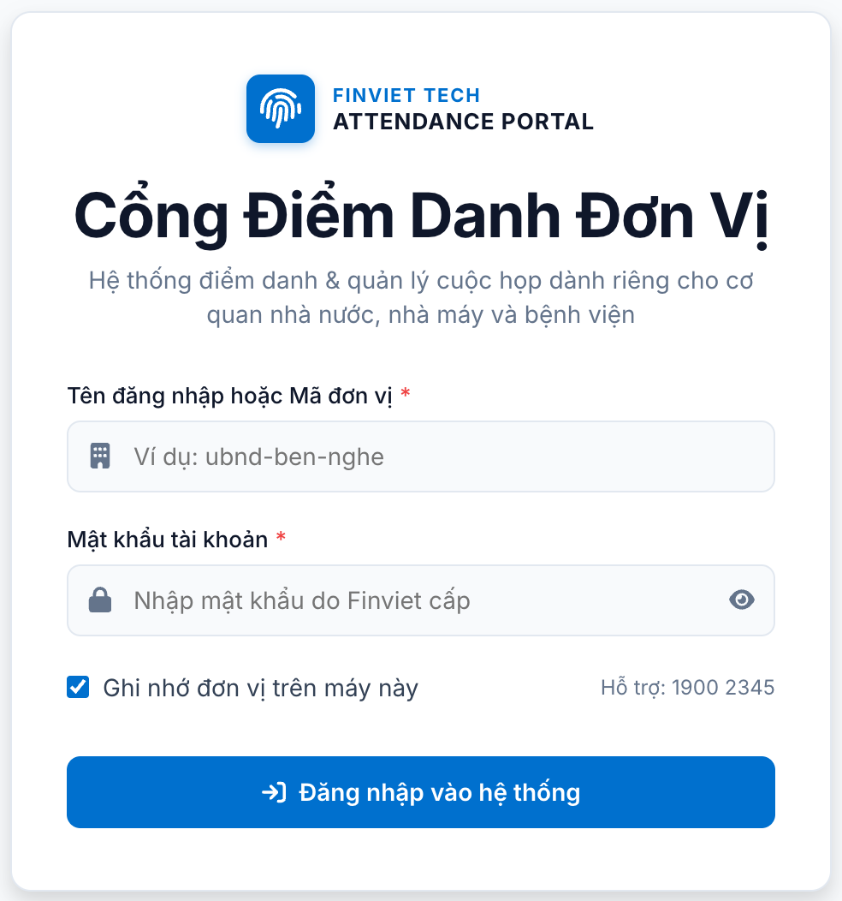
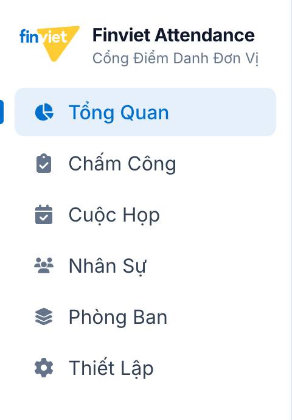
Số liệu theo ngày, theo phòng ban và theo phương thức xác thực.
Tỷ lệ hiện diện, đúng giờ, đi muộn, về sớm và vắng mặt.
Biểu đồ 14 ngày và tỷ trọng Face ID, thẻ RFID/NFC, vân tay.
Quên check-out, chuyên cần đột biến, camera tạm khóa được gom về một khung để xử lý ngay.
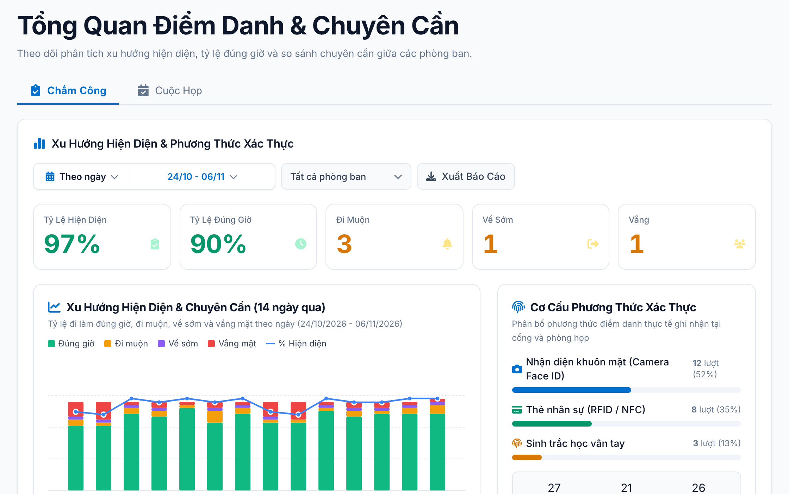
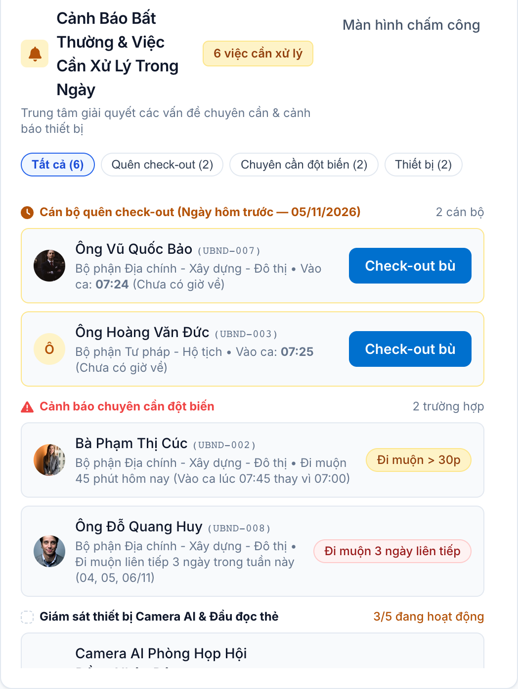
Bảng chấm công từng cán bộ, kèm cảnh báo khi thiếu giờ về.
Giờ vào/ra, trạng thái đúng giờ, đi muộn, nghỉ phép; lọc theo phòng ban và xuất Excel.
Thanh vàng liệt kê tên cán bộ chưa có giờ về; bấm tên để sao chép và tìm nhanh.
Bấm “Check-out bù” từ Tổng quan để mở đúng ngày hôm trước, chọn giờ về và xác nhận. Hệ thống lưu người bổ sung.
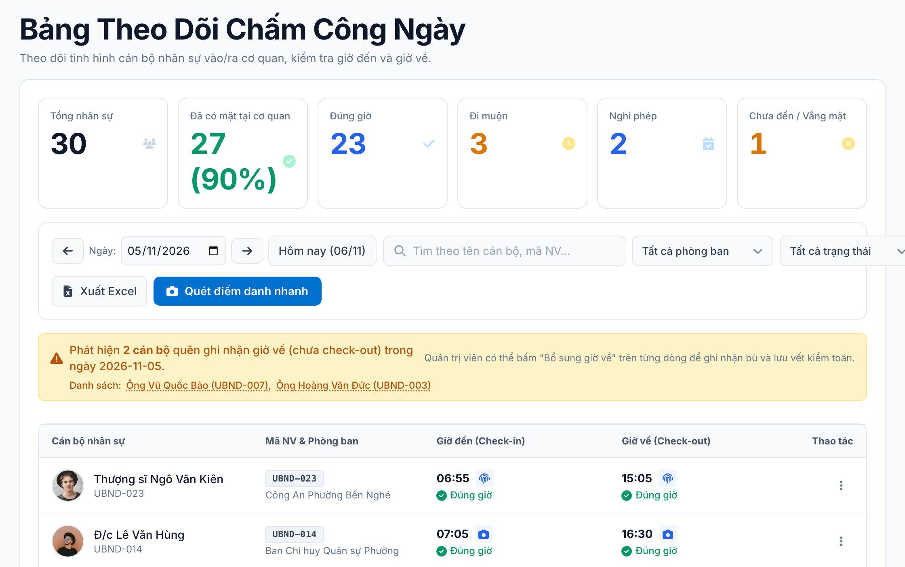
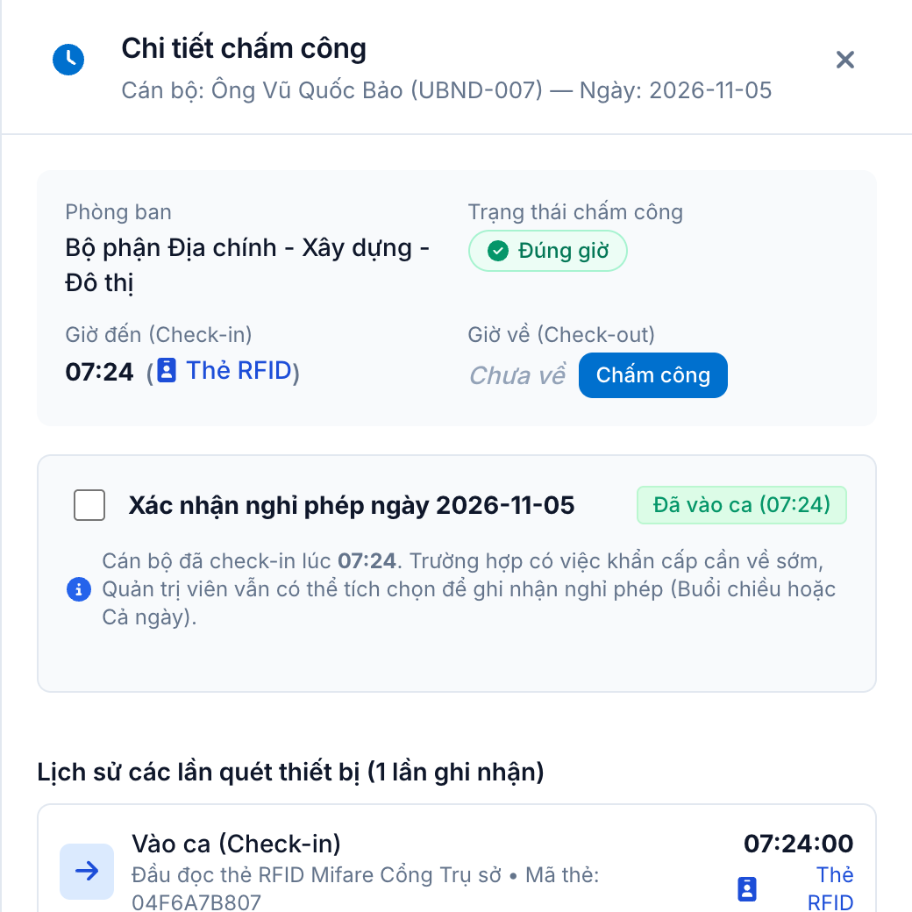
Từ triệu tập đến báo cáo kết quả trên cùng một hệ thống.
Chọn phòng họp, thời gian; đại biểu chia nhóm bắt buộc và tùy chọn.
Sắp diễn ra, đang diễn ra, đã kết thúc hiển thị rõ ngay trên danh sách.
Xem tỷ lệ tham dự, số vắng mặt và xuất Excel tổng hợp theo kỳ.
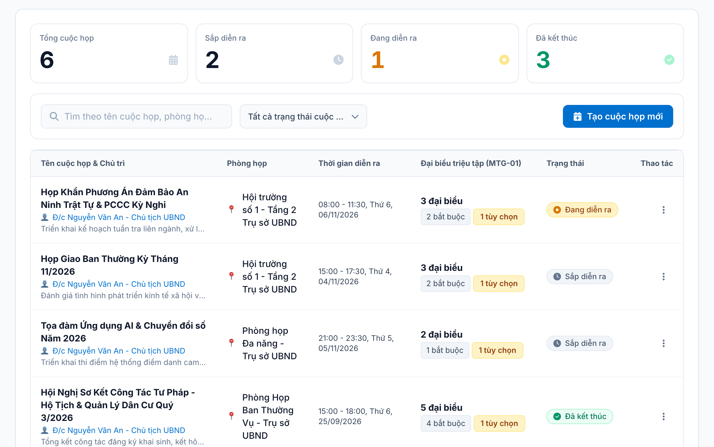
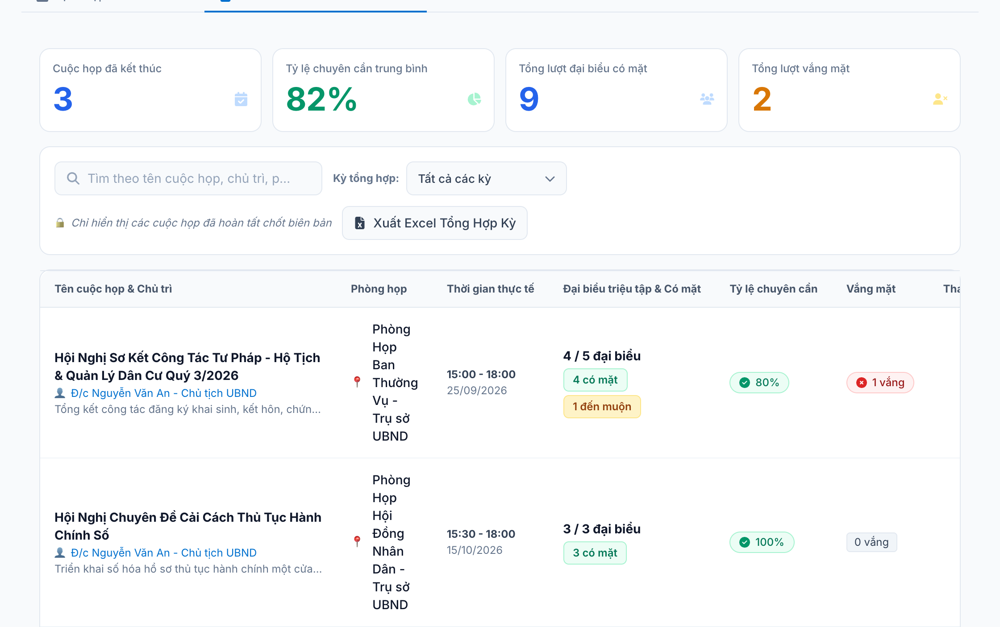
Quản lý cán bộ, thẻ RFID/NFC và cơ cấu tổ chức tập trung.
Liên lạc, chức danh, phòng ban, mã thẻ; thêm mới từng người hoặc nhập hàng loạt từ Excel.
Cấp, khóa và theo dõi trạng thái thẻ của từng cán bộ ngay trên hồ sơ.
Gán người phụ trách; số nhân sự mỗi phòng tự cập nhật theo hồ sơ.
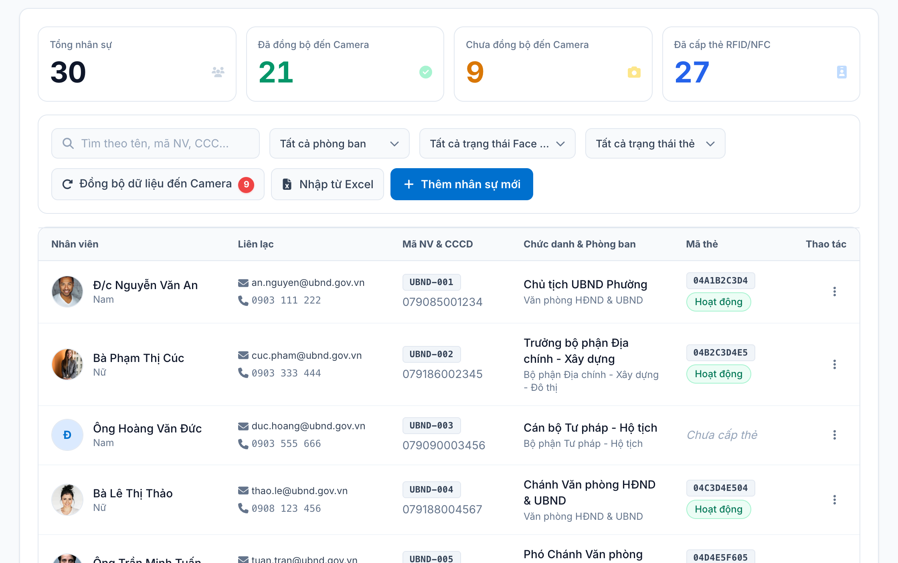
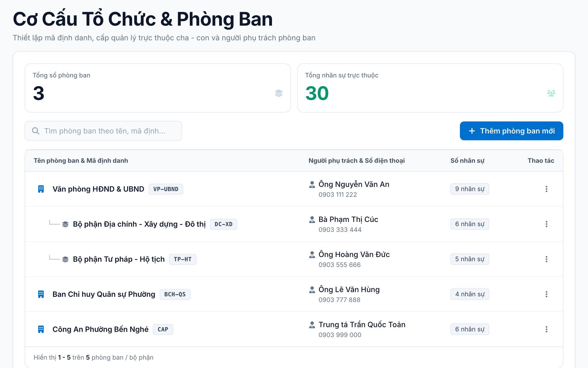
Đưa dữ liệu nhận diện của cán bộ lên camera chỉ với vài thao tác.
Hệ thống gợi ý cán bộ chưa đồng bộ; chỉ cần có ảnh Face ID là đủ điều kiện.
Chọn camera tiếp nhận và nhận báo cáo kết quả ngay sau khi đồng bộ.
Xem thiết bị, hình thức, thời gian và người thực hiện. Thẻ chỉ tính đã đồng bộ khi cán bộ chạm thẻ lần đầu.
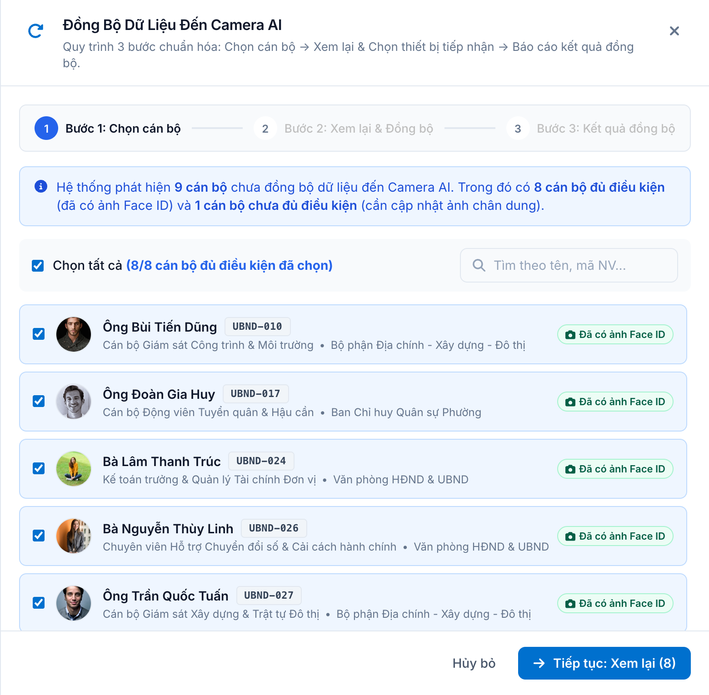
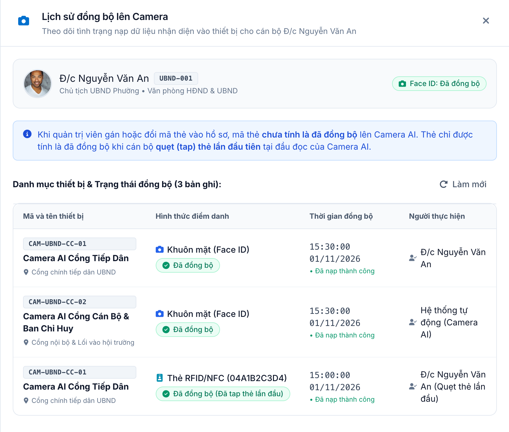
Cấu hình khung giờ, quy tắc cuộc họp và giám sát thiết bị.
Giờ vào/tan ca, số phút cho phép vào trễ, về sớm và mục tiêu chuyên cần.
Đón đại biểu trước giờ họp, mức vào trễ và về sớm mặc định cho mọi cuộc họp.
Bật/tắt từng thiết bị; trạng thái kết nối được hệ thống cập nhật tự động.
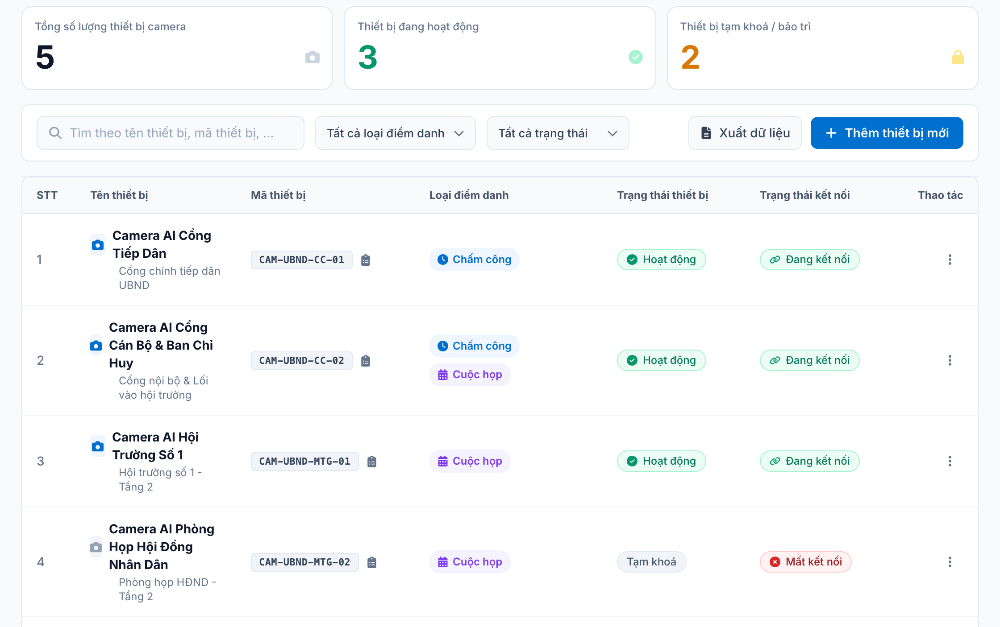
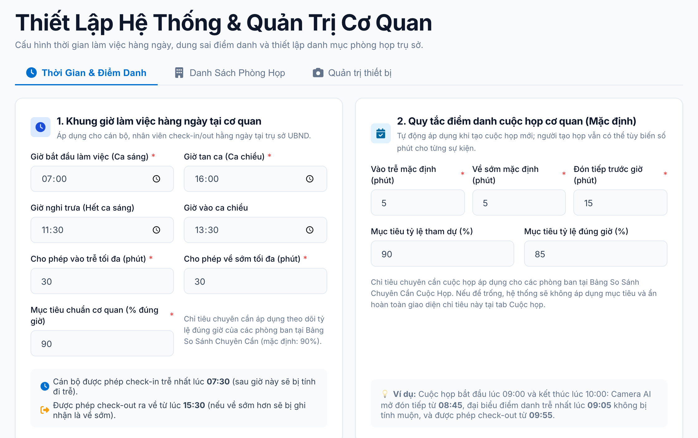
Finviet cấp tài khoản riêng cho đơn vị của bạn; dữ liệu tách biệt hoàn toàn.
Khai báo khung giờ làm việc, phòng ban và các thiết bị camera tại đơn vị.
Nhập hồ sơ từ Excel, bổ sung ảnh Face ID, đồng bộ lên camera và bắt đầu điểm danh.